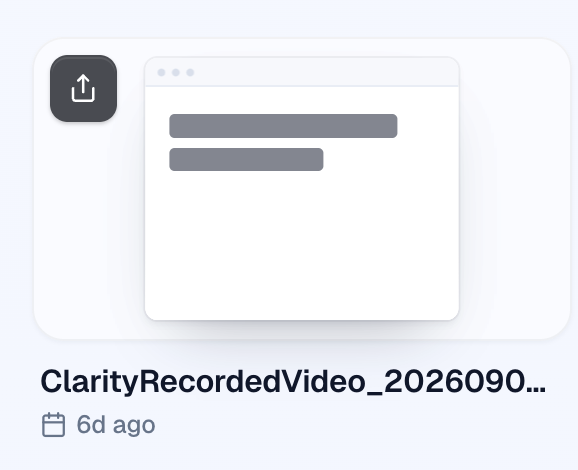
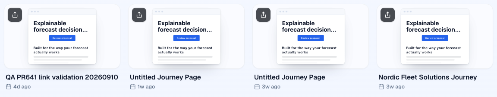
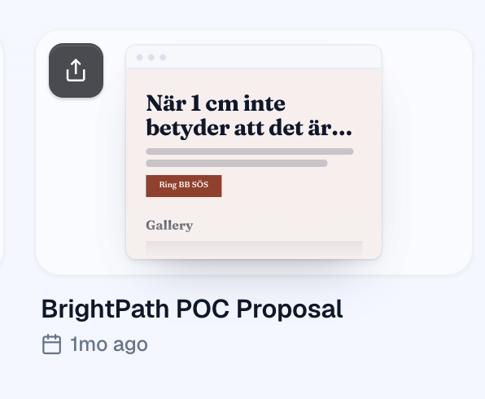
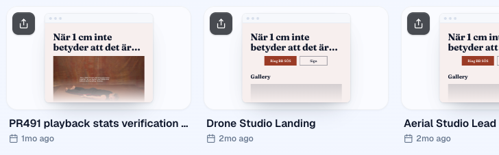

Left: the card William saw on the PR #646 preview. Right: the same page's outline drawn by the fixed MiniPage (local editor, test-account cards lending their posters). Order is now title, media, CTA row; every CTA appears with its emphasis; the row centres under a left title.



